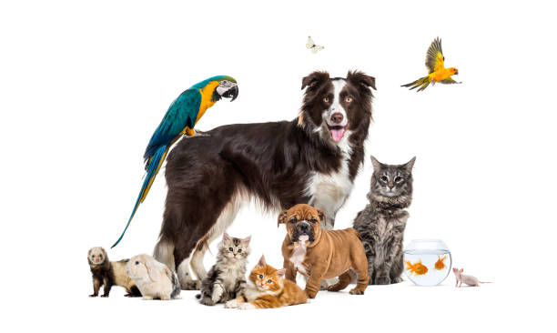
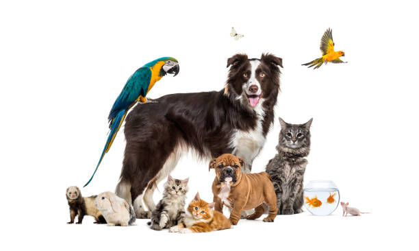

| Perro |
Los perros son conocidos por ser leales y protectores. Son excelentes compañeros y pueden ser entrenados para realizar varias tareas. |
 |
| Gato |
Los gatos son independientes y curiosos. Les encanta explorar y tienen una gran capacidad de adaptación a diferentes entornos. |
 |
| Pájaro |
Los pájaros son mascotas coloridas y alegres que pueden aprender a imitar sonidos y palabras. Necesitan un ambiente adecuado para volar y jugar. |
 |
| Pez |
Los peces son tranquilos y requieren un acuario bien cuidado. Son ideales para personas que buscan una mascota de bajo mantenimiento. |
|
 
